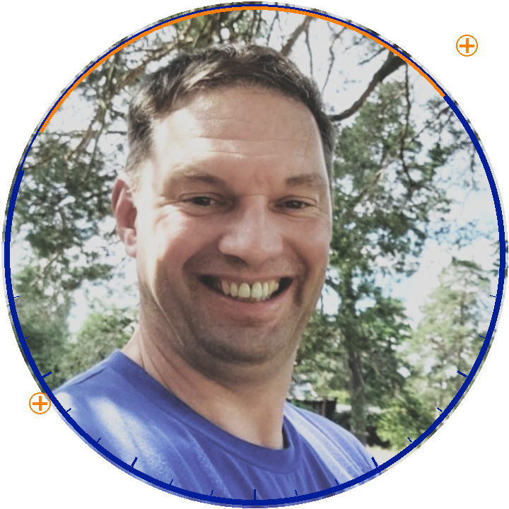
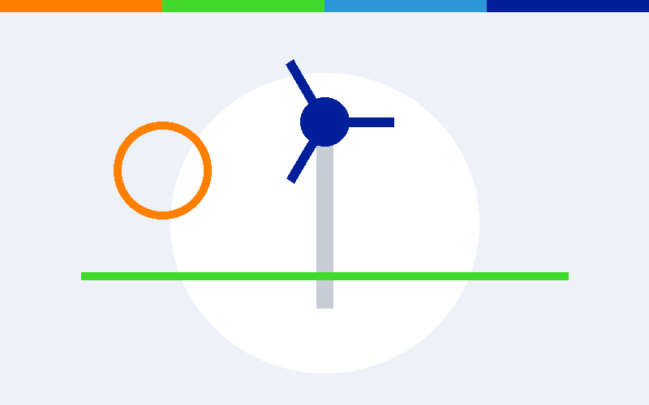
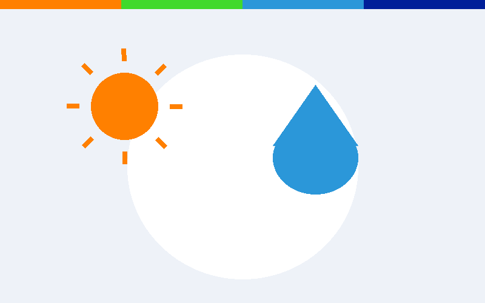
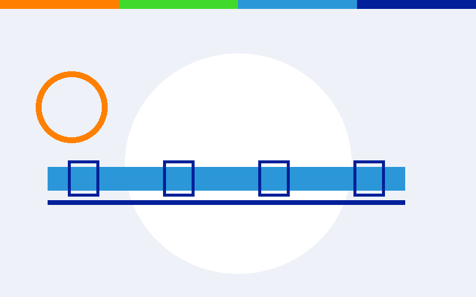

DIESPE: Uw partner in projecten
Kansen benutten en denken in oplossingen: voor elke uitdaging is een kans om iets moois te realiseren. Met een out-of-the-box kijk en een pragmatische aanpak, van initiatief tot realisatie.
Maak kennis
Werkvelden
Van initiëring tot oplevering: DIESPE verbindt denkkracht en uitvoering in de gebouwde en levende omgeving.
Management
Leidinggeven aan teams van professionals: integrale projectteams en IPM-teams, van initiatief tot realisatie.
- Leidinggeven aan teams van professionals, integrale projectteams, IPM-teams
- Teamleden in hun kracht zetten
- Procesregie en bestuurlijke besluitvorming
- Risicomanagement, inkoop en contracteren
Zoals: Vispassage Doesburg — één van Nederlands grootste vispassages, van verkenning tot realisatie.
Integrale ontwerpleiding
Vertalen van beleidsdoelen en opgaven naar integrale oplossingen: realiseerbaar, betaalbaar en acceptabel, met oog voor detail en duurzaamheid.
- Beleidsdoelen en opgaven vertalen naar integrale, realiseerbare oplossingen
- Ontwerpfasering: verkenning, planuitwerking, realiseerbaar ontwerp
- Systeembenadering en passende contractvormen
Zoals: Waardevolle Kleine Wateren, Bovenlopen Loolee — KRW-doelen vertaald naar inrichtingsmaatregelen voor vier beken.
Omgevingsgericht werken
Samenwerking, vertrouwen en het versterken van elkaars krachten — binnen en buiten het project.
- Omgevingsbewust werken met oog voor belangen
- Draagvlak creëren en betrokkenheid van belanghebbenden
- Belangen balanceren en win-win oplossingen vinden
- Gebiedsontwikkeling met maatschappelijke meerwaarde
Zoals: Optimalisatie watersysteem Lichtenvoorde — wateroverlast aangepakt met een uitgebreid burgerparticipatietraject.
Projecten
Een selectie van de opgaven waaraan wij werken — dagelijks wisselend uit het volledige portfolio.

Windpark IJsselwind te Zutphen
Ontwikkelen van windpark IJsselwind bestaande uit 3 windturbines. | …

Aanleg Waterretentie SKB te Winterswijk
Aanleg waterretentie tbv stedelijk water nabij Streekziekenhuis Koning Beatrix te Winterswijk inclusief aanpassingen in aan- en afvoerend watersysteem…

Industrieelwatertransportsysteem Borculo-Lochem
Realisatie van industrieel afvalwatertransportsysteem en bouw afvalwatergemaal…
Over DIESPE
DIESPE Omgevingsprojecten is het bureau van oprichter Diederik Speksnijder: pragmatisch, betrokken en proactief — met de focus op duurzame omgevingsprojecten in de grond-, weg- en waterbouwsector.
Diederik Speksnijder
Diederik is oprichter en eigenaar van DIESPE, en al meer dan 25 jaar een bevlogen en integer manager in de grond-, weg- en waterbouw. Hij stuurt het DIESPE-team aan en is zelf één van de gepassioneerde medewerkers.
Diederik verbindt het proces aan de inhoud, doorziet de materie snel en komt tot oplossingen — met persoonlijke aandacht voor opdrachtgevers en teamleden. Denk aan watersysteem- en energieprojecten, waterveiligheid en gebiedsontwikkeling.
Neem contact opWaarom DIESPE
DIESPE staat voor pragmatisch projectmanagement met de mens en de omgeving centraal, op zoek naar maatschappelijke meerwaarde.
- Eerst denken, dan doen
- Denkt in kansen en oplossingen, ook out-of-the-box
- Omgevingsbewust en resultaatgericht
- Hoge dienstverlening
- Eén aanspreekpunt, van initiatief tot realisatie
Werkwijze
Persoonlijk contact staat bij DIESPE voorop. Na een uitgebreide kennismaking om uw vraag echt te doorgronden, volgt een gedegen analyse en aanpak die met u wordt besproken — maatwerk, opnieuw en opnieuw.
- Verkennen: opgave helder krijgen, kansen benoemen
- Ontwerpen: integrale oplossingen, realiseerbaar en betaalbaar
- Verbinden: draagvlak bij belanghebbenden en bestuur
- Realiseren: passende contractvorm, van plan tot oplevering